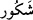

etmeyi tercih eder, O’nun rahmetini talep eder, O’nun lütuf ve minnetine şâhid olur.
Gazzâlî (rh.a.) der ki: “Allah’ın nimetine şükretmenin en güzel şekli o nimetleri
Allah’a isyan ve günahta değil, bilakis Allah’a itâatte kullanmaktır.”
“
” isminin özelliği şudur: Can sıkıntısı, darlık/gönül darlığı olan, bedenî
yorgunluk ve cismânî ağırlık hisseden kimse, bu ismi kırk bir kere yazıp suda eriterek
vücûduna sürer ve bundan içerse Allah’ın izniyle iyileşir. Yine göz ve görme zafiyeti
olan kimse de bunu gözüne sürerse bereketini görür.
31. Sana vahyettiğimiz kitap, kendinden öncekini (semavi kitapları) doğrulayıcı
olarak gelen gerçektir. Allah, kullarının (her halinden) haberdardır, görendir.
Asıl hükümlerde ve inanç konularında kendisinden önce peygamberlere indirilen
semâvî kitaplara muvâfık olarak “Sana vahyettiğimiz kitap,” yâni Kur’an “kendinden
öncekini (semâvî kitapları) doğrulayıcı olarak gelen” ve kendisinde yalan ve şüphe
olmayan “gerçektir. Allah, kullarının (her halinden) haberdardır, görendir.”
Burada “
” ifâdesindeki “ ” harf-i cerri “
” kelimesine taalluk eder. Ancak “ ”
harfi üzere olan âyet sonlarındaki uygunluk gözetilerek “
” takdim edilmiştir. Yâni
kulların hem gizli hem de âşikâre olan işlerini bilir. Ey Muhammed! (s.a.) Şayet senin
hâllerinde nübüvvete mâni bir durum olsa, diğer semâvî kitapların mihenk taşı ve
kıstası olan böyle mûcize ve hak bir kitap sana vahyedilmezdi ki o kitapların
doğrulukları da yine sana indirilen bu Kur’an’dan bilinmektedir.
Burada “
” kelimesinin “
” kelimesine takdim edilmesi ise bu ilim ve ihâtada
umde ve aslolan rûhânî işler olduğundandır. et-Te’vîlâtü’n-Necmiyye’de der ki: Allah
Teâlâ saâdet ve şakâvet ehlinden olan kulları bilir. Zira onları yaratan O’dur. Onlardan
sâdır olan ahlâk ve amelleri de görür. Elbette Allah Teâlâ Kur’an’ın hak olduğunu
bildirdi. Kur’an’ı okuyup onunla amel edene çok ecir ve sevap vereceğine dâir söz
verdi. Ümmî olup Kur’an okumasını bilmeyene bu tilâvet sevâbı hâsıl olmaz. Zira
ümmînin tilâveti yoktur. Bilakis bu ecir ve sevap kârî olan; yâni Kur’an okuyan içindir.
Öyleyse Kur’an’ı öğrenmeli, okumalı ve her zaman Kur’an ile meşgul olmalıdır. Molla
Câmi der ki:
Nefis yüzünden sıkılacak olursan,
Kur’ân-ı Kerim’i oku.
Ay yüzlü güzel gibi bir Mushaf ara;